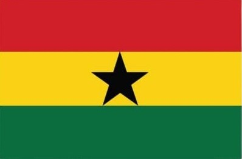

James M. G. Junior
About Me
My name is James M. G. Junior and I go by James or Junior. I am a student. I am studying web development to help me build a startup business. Outside of school, I love basketball and one day I want to travel around the world to explore the different and diverse cultures out there.
Ghana

Ghana is a country in West Africa on the Gulf of Guinea, and its capital is Accra. In 1957 it became the first country in sub-Saharan Africa to gain independence from colonial rule. Ghana is known for its gold, cocoa, colourful kente cloth, jollof rice and its football team, the Black Stars. It is also home to Lake Volta, one of the largest man-made lakes in the world.